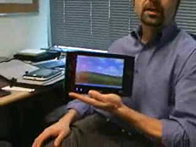
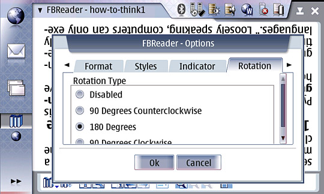

Author Archive for RogerS
Note: Links may not work or may take you to an archived page at the Internet Archive.
By RogerS March 16th, 2006
Categories: Internet tablet, Nokia 770 and browser
For sports fans, “the opera ain’t over till the fat lady sings” is a phrase
redolent of hope. For us Nokia 770 fans, I hope it means that we’re not
stuck with the Opera browser we have, but that in one of the next
iterations of firmware it’ll be more stable and more flexible.
For a device predicated on dazzling the populace with its internet
tricks, the 770’s browser and email app leave a lot to be desired.
For instance, OperaShow is a fantastic tool in the full-featured
Opera, letting you present an html file as a slide show — “page” at a
time display, no scrolling, simple click to advance. Wow, would this
fill a gap on the 770!
And how about setting different (more) options via preferences, like
minimum font size? Even if our Opera is always going to be a subset,
shouldn’t there be more customization possible?
And shouldn’t we be able to uninstall the browser and email app if we prefer some alternative applications?
Maybe Nokia will release an intermediate type of firmware, one that
falls between the consumer straight-jacket we all have and the
minimalist developer version. One where every feature would be take it
or leave it.
By RogerS March 15th, 2006
Categories: Internet tablet, Nokia 770 and software
“Squeak
is a modern, open source, highly portable, fast and full-featured implementation
of the powerful Smalltalk programming language and environment.”
Being a non-programmer, programming languages hold a peculiar
fascination for me. (Natural languages too, for that matter.) I
wouldn’t bring up a port of Squeak to the Nokia 770, however, if it
weren’t for this announcement at the Institute for the Future of the Book
about the forthcoming Sophie . . . hm-m, saying
e-book creation tool is rather limited. Here’s IF’s description:
Sophie is an open-source platform for creating and
reading electronic books for the networked environment. It will
facilitate the construction of documents that use multimedia and time
in ways that are currently difficult, if not impossible, with today’s
software.
That’s definitely worth investigating, especially if one could
create and read/experience Sophie books (for want of a better word; in
fact, IF is resigned about finding a more appropriate word for objects
that ultimately will resemble our notion of book not at all — but that’s not their problem).
I’ll be adding this to the Maemo Wiki application wishlist,
but I thought I would put this out in a larger forum in hopes of
catching the attention of a Squeak aficionado. Or someone who is as
curious about languages as I am.
Edited later to add: Squeak’s already on the wish list.
So I’m not the only one!
Edited even later to add: Squeak runs on Linux
and I’m told that “where Squeak will run, Sophie will run.” Any idea
whether Squeak is too big to fit on the 770 or whether it will run too
slowly to be usable?
And anyone knowledgeable to assess the Linux community interest
in Squeak and the potential of Sophie, especially for the educational
market?
By RogerS March 14th, 2006
Categories: Internet tablet and Nokia 770
Ruby is the only programming language I’ve ever looked at that I understood
what was going on the moment I saw it. (With python, on the other hand,
I had the completely opposite reaction.) This matters for someone like
me, since I only write a simple program every six months or so and
consequently have to relearn most of the language every time I write a
program.
I’m glad to see ruby ported
to the Nokia 770. Maybe I’ll manage a few lightweight programs (”hello, world” worked for me just now :-).
At any rate, you can download ruby from rubyforge.org/frs/download.php/8726/ruby-1.8.4.nok770d.tar.gz.
As noted in the Application Catalog,
installation does not require root access. The readme file tells you to
put the file on your mmc card and, in XTerm, to enter a specific
command to untar it. Note that the readme file instruction has two
typos in it when specifying the file name.
Thanks to Ken Hilton for doing this!
Now for a really dumb plea for help. How do I “Modify your path
to include: /var/lib/install/usr/bin”? Part of my brain keeps resisting
storing this type of information. How come there’s so much memorization
and typing in linux?
By RogerS March 13th, 2006
Categories: Internet tablet and Nokia 770
Mike Cane wrote the initial posts that we consider the founding of the
Internet Tablet Users blog (though he did it on a different website, in
a forum and not a blog, and under a different name*). So when he goes
off the 770, it’s worth comment.
I guess some people have called the forthcoming ultra-mobiles
running Windows XP Tablet “overpriced 770s.” I myself have seen only
one such comment,
but it set Mike off on a rant
that I guess first appeared at Microsoft blogger Robert Scoble’s site, Scobleizer, on March 9. (It’s reprinted in Reggie’s post from earlier today and
at John Tokash’s blog.) Later on the 9th, I received
an email from Mike with his comments, as did at least one other person I know.
I responded to them both with the following:
> A site such as Palm Addict takes *over two minutes* to
> load on a 770. I think it will be a few seconds on a
> UMPC.
I set up a stopwatch application on my PC and timed Palm Addict loading on my Nokia 770.
Loaded in seven seconds. Did it again. Six seconds.
I made one modification to my system that I advised Mike to make and
offered to make for him. He refused. It eliminated memory issues
causing slowdowns and crashes.
It would have made his system different from the off-the-shelf
system users buy today. But it would have worked wonders for his blood
pressure.
Since he won’t be recommending the 770 to anyone, and since he’s
going to get rid of it as soon as he can, I don’t see why he cares if
he has an off-the-shelf system or not. Does it make sense to you?
And I have a PostIt Notes program on my PC. It doesn’t slow down
when it hits 10KB because it only accepts 800 characters. The Notes
program on the 770 is not a lightweight text editor. There’s no
lightweight editor on the 770, no matter how much Mike claims that
Notes is one and badmouths it for being a poor one. Does the 770 need
one? Yes. Why doesn’t it have one? Because Mike wasn’t the head of
development, obviously.
By the way, if I took $400 or $500 more and added memory, faster
CPU, a hard drive and Windows, then decided the device didn’t have to
fit in my pocket and could weigh not 6 ounces but 32, I could turn a
770 into a UMPC.
So Nokia designed something different than Intel/Microsoft. Big
deal. So Mike wishes he had waited for those companies to get their act
together instead of opting for a less-expensive, less-capable device
from Nokia. It will just take him a while longer to save up that extra
$400-$500 to get what HE wants. Me? I’m not unhappy at all. I already have what I want.
The Origami/UMPC’s soon to appear fall into the same niche as the
Nokia 770. They’re not intended to be a replacement for your desktop,
laptop or PDA, but to enable web access and computer use at times and
in places where it’s inconvenient, impossible or just plain awkward
now**. So why does Mike Cane think 770 owners are badmouthing UMPC’s
when it’s the other way round?
You know, I have seen lots of people saying UMPC’s are overpriced
without mentioning Nokia 770’s. Me, I expect their prices to fall.
These initial ones have everything but a keyboard — VGA and ethernet
ports! — and when users realize they don’t use ultra-mobiles as
laptops, those will fall away, I think. And the UMPC’s we’ve seen so
far are huge compared to PDAs and 770’s***, but they’ll get smaller.
I say, Welcome, guys!
Build the market, enlighten the public and make lots of money!
It can only benefit the 770 and its successors as people who don’t want
Windows, a bigger size or to pay so much find that the 770 suits them
better than it suited Mike Cane.
* He moved his posting to itT when it was founded and asked me to
take over his coverage, first on a temporary basis, and then later he
declined to resume writing because of other obligations. Reggie
Suplido, the itT administrator, and I changed the format and name soon
thereafter.
** By “awkward,” I mean things like browsing on a PDA.
*** You can just about fit three 770’s within the outline of an 8.75 x 5.5-inch UMPC.
By RogerS March 9th, 2006
Categories: Internet tablet and Nokia 770
The
Ultra Mobile PC’s have come out, with five different manufacturers
releasing their models by the summer and more to follow. Welcome to the
party, guys!
To my thinking, comparison with the Nokia 770 Internet Tablet
emphasizes not only that all these devices occupy somewhat the same
space and that a lot of people want the carryaround 800-pixel screen
with a non-crippled OS, but also that there are clear differences in
what Internet Tablets and UMPCs are aiming at and who they are
marketing to. The design of the UMPC shows that forgoing a keyboard was
as far as Microsoft was willing to deviate from the standard portable
PC. (No other explanation, is there, for that VGA port and ethernet
connection on a WiFi device.) And what really is the sweet spot as far
as size is concerned? Eight inches? Or five and a half inches? Book
size? Or pocket size?
Robert Scoble, the MS blogger has a video interview
of Otto Berkes, the Origami architect and now general manager of the
UMPC group at Microsoft. In it Berkes states, “The target was not the
pocket.” With the 770, the target clearly was the pocket.
You can see from the picture of Berkes above how much bigger
today’s UMPC is*. I guess we’ll see which size proves the most popular.
More immediately, I think the UMPC’s arrival will lead many websites
to become friendlier to the 800 x 480 screen. That’s something that
truly will benefit us 770 users.
For one thing, I’m looking forward to Google designing pages
optimized for this size screen (maps, gmail). Somehow I have the
feeling this wouldn’t come as fast without the UMPC opting for 800 x
480 too.
* Future versions down to the size of a Nokia 770’s 5.5 inches have been promised.
Thanks to jkontherun for pointing out the Scobleizer video.
By RogerS March 7th, 2006
Categories: Internet tablet and Nokia 770
I followed a link from Ari Jaaksi’s blog
to an article in yesterday’s Seattle Times’
Business and Technology section. All I expected to see was a simple
reference comparing the Nokia 770 to the forthcoming Origami/UMPC
tablets.
And what I ran into was this:
This week Microsoft and Intel are announcing that the
first generation of UMPCs will go on sale later this year. They’re
expected to cost between $500 to $800. Microsoft expects 100 million
will be sold by 2008. The device was developed under the code name
Origami.
100 million! Wow. I never saw such predictions.
Here’s more:
Microsoft and Intel hope they have the next must-have
digital accessory. In the always-connected broadband world, the devices
could be a new way for people to stay plugged in without having to lug
around a laptop, cellphone and iPod.
Well, there’s half your rationale for that kind of prediction. The
article does more than refer to the 770 — it says more about Nokia’s
770 than about Origami/UMPC. Ari is quoted extensively:
Nokia doesn’t want to displace the PC or the cellphone — it wants to fill a gap between those devices.
“We see that it should be something that is really concentrating on
messaging, communications, Internet access — it’s not your word
processor or your spreadsheet,” said Ari Jaaksi, Nokia’s director of
open-source software operations.
And this explains the other half of that wow prediction:
“If you think about that there are 600 million
households with broadband connectivity, and over half of the new
broadband customers opt for Wi-Fi, more and more people are living in
this Wi-Fi bubble,” [Jaaksi] said. “There’s clearly a market
opportunity to offer experiences and devices within that bubble.”
I don’t know how big a piece of that market Nokia can grab. I hope
it sells tens of millions, because if it does, we’ll see more varieties
of sizes and features in the new Internet Tablets. And imagine an
open-sourced Linux device leading the pack in a hot consumer category!
100 million!
By RogerS March 7th, 2006
Categories: Internet tablet, Nokia 770 and phone
Sure,
I’ve been following the info about Origami (Microsoft’s end) and UMPC
(Intel’s). The more success any such device has, the more attention
will accrue to the Nokia 770, IMO. (The photo here is from Intel.)
At Intel’s website, a page labeled “Ultra Mobile PC New Category of Mobile Devices” has an interesting line about features:
- Always reachable via email, IM, chat, or VoIP
Makes me wonder: Will Nokia have the first such device with VoIP?
Or will one of the early UMPCs beat it to the punch?
By RogerS March 4th, 2006
Categories: Internet tablet, Nokia 770, e-books and software
Are
e-books mainstream? Seems that Microsoft thinks so. Its competitor to
the Nokia 770 looks like it will have an e-book variation.
In the New York Times
yesterday, details about the Microsoft/Intel Origami/ultra-mobile
carryaround computer indicate that multiple versions will be offered,
each oriented toward a different audience. One would seem to be the
Nokia 770 crowd, interested in web-browsing and accessing e-mail as the
significant function. Another target being aimed at would be gamers,
with the browsing/e-mail aspects definitely secondary in their
interests.
From information coming out at Teleread,
it seems an e-book reader is also being planned. Microsoft has a
fabulous e-reader (Microsoft Reader) in place, with DRM that enables it
to deal with commercial, encrypted book titles. They also have
long-standing arrangements with major publishers and the online
booksellers. Sony’s Reader might be cheaper, but the Origami/UMPC will
run XP, and will include WiFi access, not to mention color (both absent
in Sony’s device).
The Times quoted an Intel marketing director as saying, “We
don’t want to create a Swiss Army knife, because that’s not what users
want,” thus the variations on a theme. This single-focus easy use built
atop a device that retains full capability bears more than a passing
resemblance to Nokia’s thinking. Ari Jaaksi referred to the box this
puts them in — they can’t add features/programs without becoming that
unfocused Swiss Army knife. But if Nokia isn’t going to emulate
Microsoft’s approach and market multiple devices to different
audiences, will it lose the first comer advantage?
Myself, I’d like to see Nokia acknowledge the application of the 770
as an e-reading device. Maybe it’s as I’ve proposed, by including the
e-reader as one of its central apps. Or maybe it’s Nokia creating
multiple firmware images, one for each of those different audiences
Microsoft and Intel have identified. And the first specialized one
could be for e-reading enthusiasts and students.
Microsoft and Sony are committing to the commercial e-book market,
but Nokia doesn’t have to go there. There are millions of e-books being
downloaded every month that are free, as well as e-books created for
offline reading of websites, using programs like Plucker and Sunrise.
With a six- to ten-month headstart over Origami, Nokia can position
itself as the leader in the e-reader field.
By RogerS February 16th, 2006
Categories: Internet tablet, Nokia 770 and e-books

FBReader 0.72 is something lefthanded readers will really love — now
the text will rotate 90, 180 or 270 degrees, allowing the user to hold
the 770 in the right hand and easily page through a book. While the
Preferences dialog is blocking most of the screen, you should be able
to see that the text in the screen capture above is rotated 180 degrees.
The Enter key (in the center of the scroll wheel) still switches
between normal and rotated text; the Rotation tab lets the user select
which rotation.
Today’s new release fixes a few minor bugs and adds a few other new
features, such as support for bzip2 archives and another file format,
TCR.
You can download the latest installer-ready version from the FBReader home page:
only.mawhrin.net/fbreader/maemo/fbreader-maemo_0.7.2a-1_arm.deb
While lefthanders have been asking for this on all programs to make the 770
more usable, I can only recall seeing one game — Frozen Bubble — that
also rotated, but it’s
never come out. I wonder how long it will be till this is a feature built into the OS?
According to Lemody’s blog, Ramblings of a Madman, it’s technically
feasible “without speed or memory loss.” See his photo from December
in an earlier item, “The Nokia 770 and the Pong clock.”
When I had a RocketeBook, one of the first devices for reading
e-books, I used to read for a while holding it in my left hand, then
rotate the text 180 degrees — then physically rotate the device so the
paging keys were on the right — and then hold it for a while in my
right hand.
The RocketeBook was considerably heavier than a 770, but I imagine
I’ll end up doing the same with it. After all, when you’re getting
sleepy, that six ounces becomes heavier and heavier, doesn’t it.
I note that a newer version of the FBReader deb file has been posted:
only.mawhrin.net/fbreader/maemo/fbreader-maemo_0.7.2a-1_arm.deb
(Yes, I changed the link above, too.)
Unremarked in the earlier description is a fix to FBReader that
prevented it from seeing e-books installed in the Documents folder. A
post by geometer (aka Nikolay Pultsin, FBReader’s creator) in
the Mobileread.com forums alerted
us to that. That’s the best place to get FBReader information beyond our reports here at itT.
By RogerS February 15th, 2006
Categories: Internet tablet, Nokia 770, pim and software
Joel Spolsky, the programming entrepreneur-essayist, listed these Ajax calendars at his blog, joelonsoftware a week ago:
He didn’t think much of any of these.
Then the next day, he wrote about Airset, which he liked.
Are any of these suitable calendars for the Nokia 770? I mean, I can
look at them, but I won’t be able to give any of them a good test. But
some of you can. Let’s find out which of these if any work really well,
and work really well on the 770.
Report back in your blog or the itT forums or as comments to this blog item, please. Thanks.
Update: Maybe I should just say “online calendars.” =DC= points to RSSCalendar as another candidate, though not Ajax. I say, whatever works, works.
|
|
|